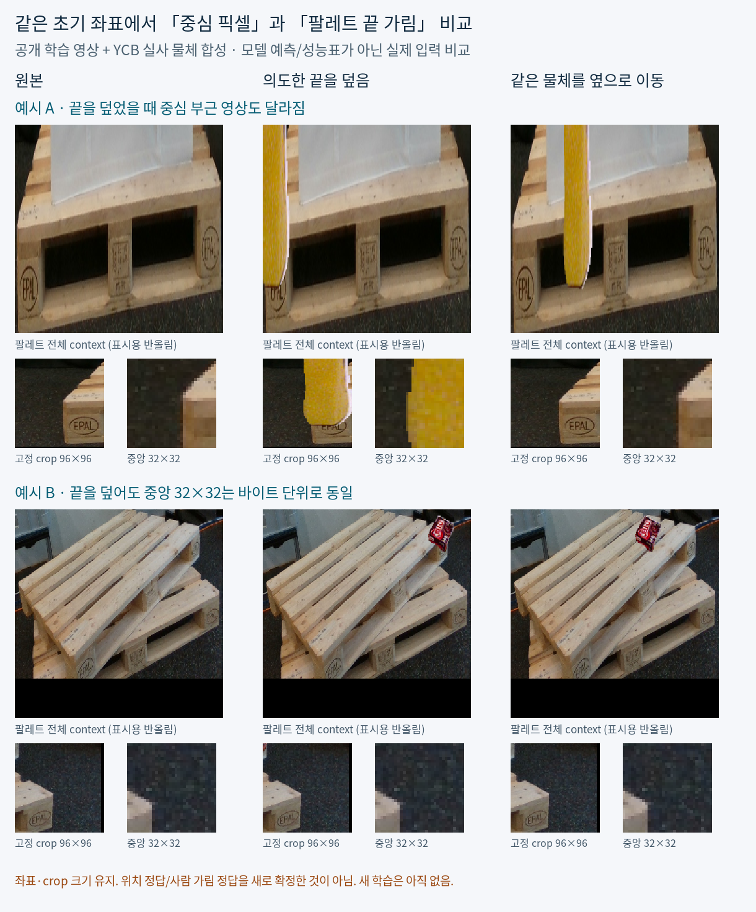

공개 TRAIN 입력 단계 기록 · 2026-10-24 11:31:20 KST · 이후 학습 결과를 포함하지 않는 시점별 보고서
| 단계 | 실제 수치 | 해석 |
|---|---|---|
| V164 고정 생성 | 22사례 × TRAIN donor 3개 = 66시도 통과46 / 배치 경계 실패5 / 영역 UNKNOWN15 | 실패5는 BEFORE만 저장. UNKNOWN15는 추정 영역이나 가짜 개입 이미지를 만들지 않음. |
| 저장 배열 검증 | NPZ 194개 = 입력 payload143 + 변환 donor51 무결성 검증 66/66 | 66/66은 실패 보존·배열 일치 검사 수치. 생성 통과는 46/66이며 전체 통과 PASS는 false. |
| 시각 증거 QA | PNG 해시 767개 = variant 자산715 + CARD51 + census1 직접 확인52장 = CARD51 + census1 | 767개를 모두 직접 본 것은 아님. root는 별도 고정5 CARD·요약 그림·census를 확인. |
| V165 동결 특징 | 실제 encoder 호출109 = BEFORE17 + 개입92 143 payload → 1,144행 × 1,928차원 | 새 모델 학습이 아닌 기존 동결 encoder 추출. 입력 U178행도 유지. |
| 특징 동일성·누락 보존 | BEFORE17프레임/136행 원본 특징 byte 일치 BEFORE34 exact reuse · 198상태 중 누락55는 null 유지 | 실패5 BEFORE 포함. 1,144행 해시 및 143개 전처리 바인딩을 root 저장 특징 감사로 확인. |
A는 지원된 17사례에서 사전 규칙으로 한 donor의 세 variant를 직접 확인했습니다. 관찰한 거친 상판 끝 외관은 COVER에서 사라지고 SHAM에서 유지됐습니다(각17/17). 이는 assistant 약한 관찰이며, 46쌍 전체나 정확한 native 점·전체 부품·물리 가시성을 인증한 gold가 아닙니다.
합성 크기·시점·경계·접촉 그림자 cue, 주변 판·블록까지 가리는 영향, 아래 적층 팔레트의 비슷한 끝이 남는 문제가 기록됐습니다. 같은 q/L은 유지되며, q의 literal 중심과 의도한 부위 끝은 서로 다를 수 있습니다.
통과46쌍 중 COVER의 center4 RGB가 그대로인 경우11, 전처리 central32가 동일한 경우2가 있습니다. SHAM37쌍은 선택 local/central가 동일하고 target context만 달랐습니다. 부위 개입과 중심 변화의 차이이며, 좌표 오류·3px gold나 모델 성능 수치가 아닙니다.

전체66시도 입력 갤러리 · 이전 전체390 부위 관찰 갤러리 · 66시도 census PNG
V164·V165의 신규 head fit은 0회입니다. 원본 source와 current223의 신규 학습 사용도 0이며 PnP 실행·q/L/좌표 보정도 0입니다. 시각화와 특징 추출은 일반화 성능 결과가 아닙니다. 기존 V162의 고정 공개 held 약한 E 결과 2/52 → 3/52와 양쪽 전체 자격 미통과는 그대로 유지합니다.
후속 V166 C45/C46은 별도 주손실 대조학습 단계입니다. 통과46쌍의 COVER/SHAM92개를 별도 프로토콜의 약한 native 증거로 검증합니다. 이 보고서는 V164·V165 입력 생성 단계의 기록이며 후속 학습 결과를 포함하지 않습니다. 실행 현황은 parent ACTIVE_HANDOFF_KO.json을 참조하세요. V164·V165 원자료의 새 native·quality·owner targets는 모두 −1이고 학습 admission은 false입니다.
WOOD 일부 상판 끝의 실험입니다. UNKNOWN runner5사례, native7 실제 부위 witness, 실사 SQUARE와 점 품질 gold가 부족하며 원래 WOOD/SQUARE/native8 전체 목표는 유지됩니다. selected=null · adopted=false · fully_solved=false.